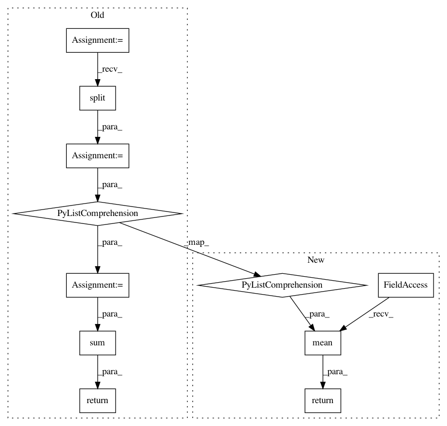

8592777b126908e3205cfb8371744ed359e4b04e,magpie/base/inverted_index.py,InvertedIndex,get_first_phrase_occurrence,#InvertedIndex#Any#,29
Before Change
self.index[word].append(position)
def get_first_phrase_occurrence(self, phrase):
terms = phrase.split()
first_occ = [self._get_first_term_occurrence(term) for term in terms]
// TODO maybe a better function would do here
return sum(first_occ) / len(first_occ)
def _get_first_term_occurrence(self, term):
stemmed = stem(term)
if stemmed not in self.index:
After Change
def get_first_phrase_occurrence(self, keyphrase):
// TODO maybe a better function would do here
return np.mean([self._get_first_term_occurrence(term)
for term in keyphrase])
def _get_first_term_occurrence(self, term):
if term not in self.index:
return 1
In pattern: SUPERPATTERN
Frequency: 4
Non-data size: 11
Instances
Project Name: inspirehep/magpie
Commit Name: 8592777b126908e3205cfb8371744ed359e4b04e
Time: 2016-01-11
Author: jan.stypka@cern.ch
File Name: magpie/base/inverted_index.py
Class Name: InvertedIndex
Method Name: get_first_phrase_occurrence
Project Name: inspirehep/magpie
Commit Name: 8592777b126908e3205cfb8371744ed359e4b04e
Time: 2016-01-11
Author: jan.stypka@cern.ch
File Name: magpie/base/inverted_index.py
Class Name: InvertedIndex
Method Name: get_last_phrase_occurrence
Project Name: inspirehep/magpie
Commit Name: 8592777b126908e3205cfb8371744ed359e4b04e
Time: 2016-01-11
Author: jan.stypka@cern.ch
File Name: magpie/base/global_index.py
Class Name: GlobalFrequencyIndex
Method Name: get_term_idf
Project Name: inspirehep/magpie
Commit Name: 8592777b126908e3205cfb8371744ed359e4b04e
Time: 2016-01-11
Author: jan.stypka@cern.ch
File Name: magpie/base/inverted_index.py
Class Name: InvertedIndex
Method Name: get_term_frequency